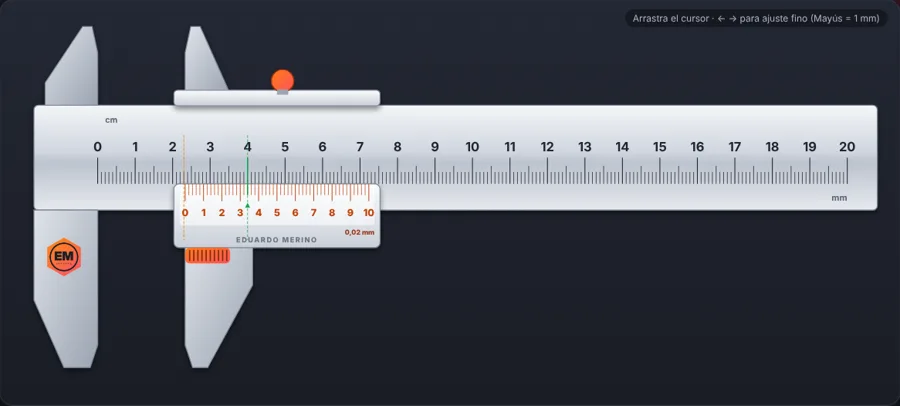
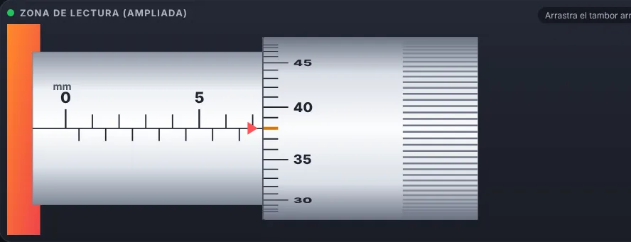
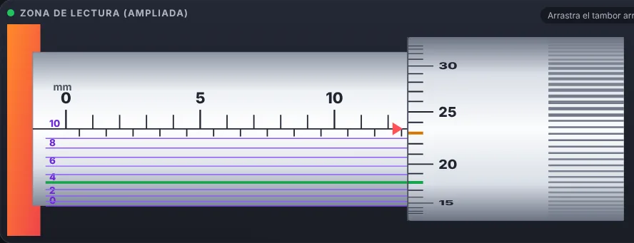

Calibre (pie de rey)
MedidaNivel básicoCon reto
Mide con nonio de 0,1, 0,05 y 0,02 mm. Arrastra el cursor, usa las lupas y ponte a prueba con piezas al azar.

▶ Practica ahora EDUARDO MERINOLa élite se construye día a día
EDUARDO MERINOLa élite se construye día a día
Aprende metrología de taller con instrumentos que se mueven como los de verdad. Ábrelos, muévelos y lee la medida; cuando lo tengas claro, pasa al modo reto con piezas al azar, suma puntos, sube de nivel y gana insignias. Todos funcionan desde el móvil o el ordenador, sin registro y también sin conexión.
Mide con nonio de 0,1, 0,05 y 0,02 mm. Arrastra el cursor, usa las lupas y ponte a prueba con piezas al azar.

▶ Practica ahoraGira el tambor, lee el cilindro y el tambor y comprueba tu lectura al centésimo de milímetro.

▶ Practica ahoraEl más fino: cilindro, tambor y nonio para leer la micra. Para cuando ya dominas el centesimal.

▶ Practica ahoraMira tu nivel, tus insignias y tu racha diaria. Se guarda solo en este dispositivo, sin cuentas.
📲 Instálala en el móvil: en Chrome, abre el menú ⋮ y pulsa «Añadir a pantalla de inicio» o «Instalar aplicación». Funciona también sin conexión.